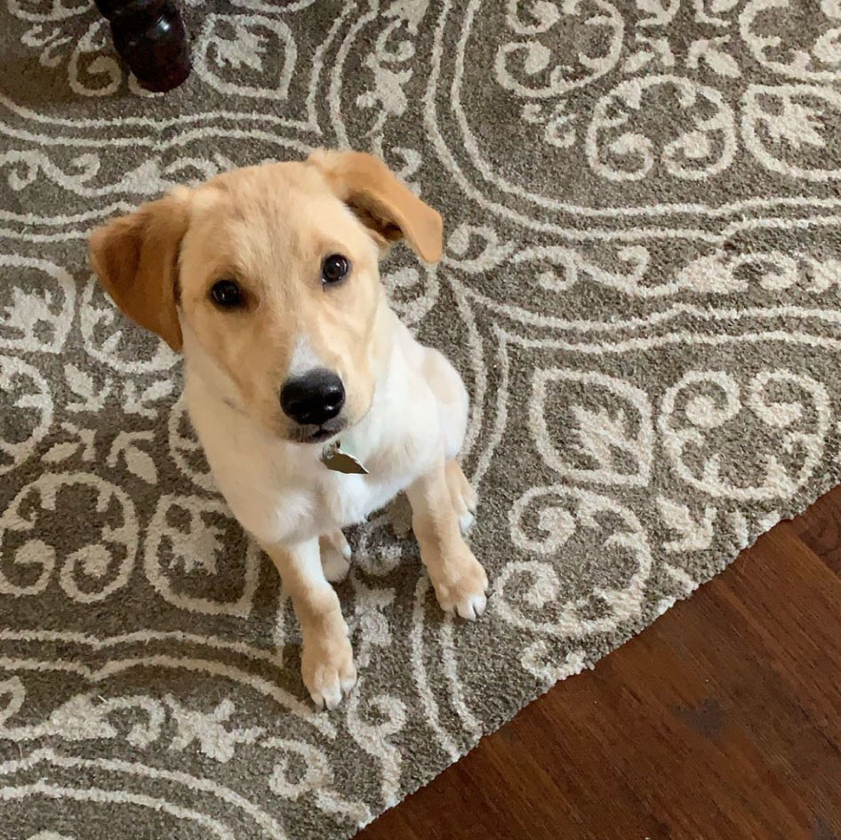
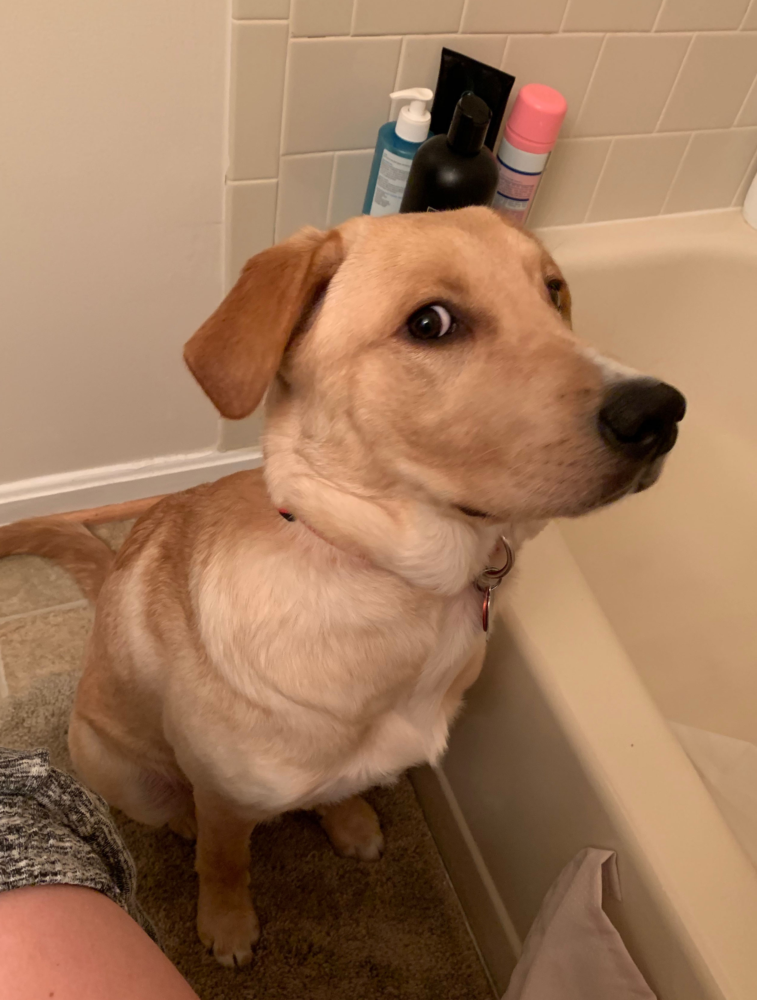
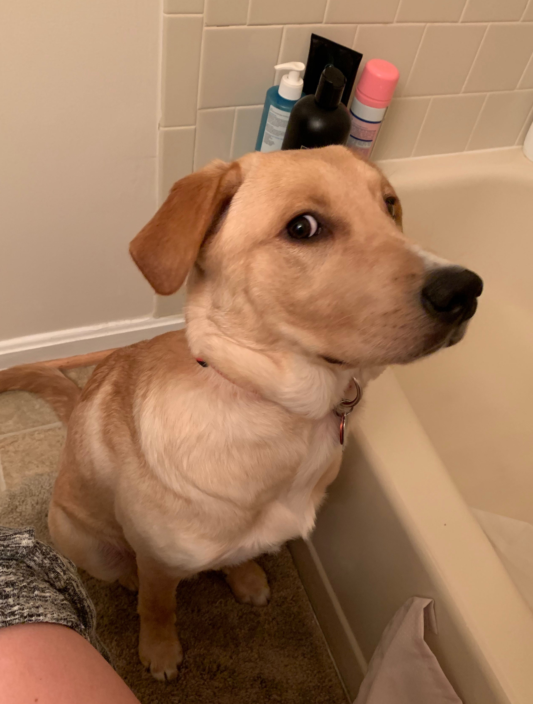

Lukey Pookie
An absolute rascal and scoundrel of a dog

I have a dog named Luke Carroll. He is stupid beyond belief. I love him so much. My mom, my sister, and I got him when he was only about 3-4 months old. We were his fourth home, which was surprising to us because he is one of the sweetest, cutest dogs ever. However, he is not a dog without his own quirks.
What stupid looks like
 
